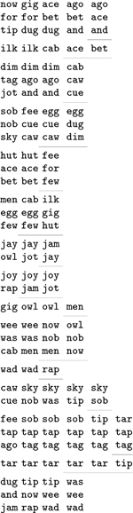
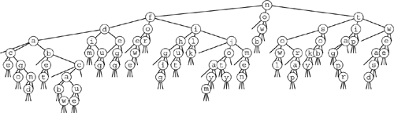

C++ Programming Robert Sedgewick - Princeton University Addison Wesley Professional Algorithms in C++, Parts 1–4: Fundamentals, Data Structure, Sorting, Searching, Third Edition
10.4. Three-Way Radix Quicksort
Another way to adapt quicksort for MSD radix sorting is to use three-way partitioning on the leading byte of the keys, moving to the next byte on only the middle subfile (keys with leading byte equal to that of the partitioning element). This method is easy to implement (the one-sentence description plus the three-way partitioning code in Program 7.5 suffices, essentially), and it adapts well to a variety of situations. Program 10.3 is a full implementation of this method.
In essence, doing three-way radix quicksort amounts to sorting the file on the leading characters of the keys (using quicksort), then applying the method recursively on the remainder of the keys. For sorting strings, the method compares favorably with normal quicksort and with MSD radix sort. Indeed, it might be viewed as a hybrid of these two algorithms.
To compare three-way radix quicksort to standard MSD radix sort, we note that it divides the file into only three parts, so it does not get the benefit of the quick multiway partition, especially in the early stages of the sort. On the other hand, for later stages, MSD radix sort involves large numbers of empty bins, whereas three-way radix quicksort adapts well to handle duplicate keys, keys that fall into a small range, small files, and other situations where MSD radix sort might run slowly. Of particular importance is that the partitioning adapts to different types of nonrandomness in different parts of the key. Furthermore, no auxiliary array is required. Balanced against all these advantages is that extra exchanges are required to get the effect of the multiway partition via a sequence of three-way partitions when the number of subfiles is large.
Figure 10.11 shows an example of the operation of this method on the three-letter-word sorting problem of Figure 10.7. Figure 10.12 depicts the recursive-call structure. Each node corresponds to precisely three recursive calls: for keys with a smaller first byte (left child), for keys with first byte equal (middle child), and for keys with first byte larger (right child).
We divide the file into three parts: words beginning with a through i, words begininning with j, and words beginning with k through z. Then, we sort recursively.

This tree-trie combination corresponds to a substitution of the 26-way nodes in the trie in Figure 10.10 by ternary binary search trees, as illustrated in Figure 10.13. Any path from the root to the bottom of the tree that ends in a middle link defines a key in the file, given by the characters in the nodes left by middle links in the path. Figure 10.10 has 1035 null links that are not depicted; all the 155 null links in this tree are shown here. Each null link corresponds to an empty bin, so this difference illustrates how three-way partitioning can cut dramatically the number of empty bins encountered in MSD radix sorting. 
Three-way radix quicksort addresses the empty-bin problem for MSD radix sort by doing three-way partitioning to eliminate 1 byte value and (recursively) to work on the others. This action corresponds to replacing each M-way node in the trie that describes the recursive call structure of MSD radix sort (see Figure 10.9) by a ternary tree with an internal node for each nonempty bin. For full nodes (left), this change costs time without saving much space, but for empty nodes (right), the time cost is minimal and the space savings is considerable.
When the sort keys fit the abstraction of Section 10.2, standard quicksort (and all the other sorts in Chapters 6 through 9) can be viewed as an MSD radix sort, because the compare function has to access the most significant part of the key first (see Exercise 10.3).
Program 10.3. Three-way radix quicksort|
This MSD radix sort is essentially the same code as quicksort with three-way partitioning (Program 9.5), but with the following changes: (i) key references become key-byte references, (ii) the current byte is added as a parameter to the recursive routine, and (iii) the recursive calls for the middle subfile move to the next byte. We avoid moving past the ends of strings by checking whether the partitioning value is 0 before recursive calls that move to the next byte. When the partitioning value is 0, the left subfile is empty, the middle subfile corresponds to the keys that the program has found to be equal, and the right subfile corresponds to longer strings that need to be processed further.
#define ch(A) digit(A, d)
template <class Item>
void quicksortX(Item a[], int l, int r, int d)
{
int i, j, k, p, q; int v;
if (r-l <= M) { insertion(a, l, r); return; }
v = ch(a[r]); i = l-1; j = r; p = l-1; q = r;
while (i < j)
{
while (ch(a[++i]) < v) ;
while (v < ch(a[--j])) if (j == l) break;
if (i > j) break;
exch(a[i], a[j]);
if (ch(a[i])==v) { p++; exch(a[p], a[i]); }
if (v==ch(a[j])) { q--; exch(a[j], a[q]); }
}
if (p == q)
{ if (v != '\0') quicksortX(a, l, r, d+1);
return; }
if (ch(a[i]) < v) i++;
for (k = l; k <= p; k++, j--) exch(a[k], a[j]);
for (k = r; k >= q; k--, i++) exch(a[k], a[i]);
quicksortX(a, l, j, d);
if ((i == r) && (ch(a[i]) == v)) i++;
if (v != '\0') quicksortX(a, j+1, i-1, d+1);
quicksortX(a, i, r, d);
}
|
For example, if the keys are strings, the compare function should access only the leading bytes if they are different, the leading 2 bytes if the first bytes are the same and the second different, and so forth. The standard algorithm thus automatically realizes some of the same performance gain that we seek in MSD radix sorting (see Section 7.7). The essential difference is that the standard algorithm cannot take special action when the leading bytes are equal. Indeed, one way to think of Program 10.3 is as a way for quicksort to keep track of what it knows about leading digits of items after they have been involved in multiple partitions. In the small subfiles, where most of the comparisons in the sort are done, the keys are likely to have many equal leading bytes. The standard algorithm has to scan over all those bytes for each comparison; the three-way algorithm avoids doing so.
Consider a case where the keys are long (and are fixed length, for simplicity), but most of the leading bytes are all equal. In such a situation, the running time of normal quicksort would be proportional to the word length times 2NlnN, whereas the running time of the radix version would be proportional to N times the word length (to discover all the leading equal bytes) plus 2NlnN (to do the sort on the remaining short keys). That is, this method could be up to a factor of ln N faster than normal quicksort, counting just the cost of comparisons. It is not unusual for keys in practical sorting applications to have characteristics similar to this artificial example (see Exercise 10.25).
Another interesting property of three-way radix quicksort is that it has no direct dependencies on the size of the radix. For other radix sorting methods, we have to maintain an auxiliary array indexed by radix value, and we need to ensure that the size of this array is not appreciably larger than the file size. For this method, there is no such table. Taking the radix to be extremely large (larger than the word size) reduces the method to normal quicksort, and taking the radix to be 2 reduces it to binary quicksort, but intermediate values of the radix give us an efficient way to deal with equal stretches among pieces of keys.
For many practical applications, we can develop a hybrid method with excellent performance by using standard MSD radix sort for large files, to get the advantage of multiway partitioning, and a three-way radix quicksort with a smaller radix for smaller files, to avoid the negative effects of large numbers of empty bins.
Three-way radix quicksort is also applicable when the keys to be sorted are vectors (either in the mathematical sense or in the sense of the C++ Standard Template Library). That is, if the keys are made up of independent components (each an abstract key), we might wish to reorder records such that they are in order according to the first components of the keys, and in order according to the second component of the keys if the first components are equal, and so forth. We can think of vector sorting as a generalization of radix sorting where we take R to be arbitrarily large. When we adapt Program 10.3 to this application, we refer to it as multikey quicksort.
Exercises | 10.25 For d > 4, suppose that keys consist of d bytes, with the final 4 bytes having random values and all the other bytes having value 0. Estimate the number of bytes examined when you sort the file using three-way radix quicksort (Program 10.3) and normal quicksort (Program 7.1) for files of size N for large N, and calculate the ratio of the running times. | | | | 10.26 Empirically determine the byte size for which three-way radix quicksort runs fastest, for random 64-bit keys with N = 103, 104, 105, and 106. | |  10.27 Develop an implementation of three-way radix quicksort for linked lists. 10.27 Develop an implementation of three-way radix quicksort for linked lists.
| | 10.28 Develop an implementation of multikey quicksort for the case where the keys are vectors of t floating-point numbers, using equality testing among floating point numbers as described in Exercise 4.6. | | 10.29 Using the key generator of Exercise 10.19, run three-way radix quicksort for N = 103, 104, 105, and 106. Compare its performance with that of MSD radix sort. | | 10.30 Using the key generator of Exercise 10.21, run three-way radix quicksort for N = 103, 104, 105, and 106. Compare its performance with that of MSD radix sort. | | 10.31 Using the key generator of Exercise 10.23, run three-way radix quicksort for N = 103, 104, 105, and 106. Compare its performance with that of MSD radix sort. |
|